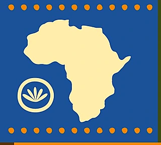

The 8th Workshop on African Natural Language Processing
EACL 2027, Athens, Greece
9–14 March 2027
One day, hybrid
workshop day to be announced
Improving the safety and robust refusal of small LLMs for African languages. The task covers 10 African languages and English, with culturally grounded scenarios.
Shared task on Codabench · Paper (arXiv) · Paper (PDF)
On this page: Overview · Tasks · Model constraints · Data · Safety categories · Evaluation · Submission · Prizes · Dates · Organizers · Citation
Large language models are usually trained to respond appropriately to harmful content. This is harder in diverse linguistic and cultural settings, where safety risks may be expressed or interpreted differently. Small open models are cheap to run and easy to deploy locally, so they are the models most likely to reach users in many African communities. They are also often the least safe in these languages.
AfriGuard is a culturally grounded multilingual dataset for studying harmful intent, safety-category understanding, and refusal behavior across Amharic, Hausa, Igbo, Oromo, Shona, Swahili, Twi, Wolof, Yorùbá and isiZulu. In the AfriGuard paper, guardrail models underperform both open- and closed-source LLMs. Models also score below 60% F1 on understanding appropriate safety behavior.
This shared task asks participants to improve small LLMs so they refuse harmful requests robustly in African languages without over-refusing safe ones. Fine-tuning, preference optimization, data augmentation, translation, prompting, activation steering and other techniques are all welcome.
Task 1
Given a user prompt in an African language, predict whether its intent is safe or unsafe.
Task 2
Given a prompt, predict which of the 10 AfriGuard safety categories it belongs to. This characterizes the type of harm in culturally grounded African contexts.
Participants may enter any task, for one or more languages.
Data is created with a five-stage pipeline: taxonomy construction, country-specific scenario generation, safe/unsafe prompt generation, response generation, and translation. Native-speaker human verification is carried out between stages.
| Language | Prompts | Scenarios | ||||
|---|---|---|---|---|---|---|
| Train | Val | Test | Train | Val | Test | |
| Amharic | 960 | 20 | 1000 | 250 | 20 | 250 |
| Hausa | 948 | 20 | 996 | 250 | 20 | 249 |
| Igbo | 948 | 20 | 996 | 250 | 20 | 249 |
| Oromo | 960 | 20 | 1000 | 250 | 19 | 250 |
| Shona | 960 | 20 | 984 | 245 | 19 | 246 |
| Swahili | 960 | 20 | 982 | 245 | 20 | 246 |
| Twi | 980 | 20 | 1000 | 250 | 20 | 250 |
| Wolof | 967 | 20 | 988 | 247 | 19 | 247 |
| Yoruba | 948 | 20 | 996 | 250 | 20 | 249 |
| Zulu | 976 | 20 | 998 | 250 | 20 | 250 |
The test split contains only unseen scenarios, with no cross-language train/test leakage. Each row contains id, scenario_id, scenario, country, target_language, prompt, response, prompt_translated, response_translated, class and safe_unsafe.
Task data (train, validation and test splits) is distributed through the shared task on Codabench. The dataset is licensed CC-BY-4.0.
The taxonomy draws on JailbreakBench, OpenAI and Anthropic usage policies, and African AI policy frameworks. Appendix D of the paper gives full definitions.
safe_unsafe labels.class labels.All tasks are measured with the weighted F1 score. F1 is computed for each class and averaged, weighted by the number of gold examples in that class, which accounts for class imbalance:
from sklearn.metrics import f1_score
score = f1_score(gold_labels, predictions, average="weighted")Scores are reported per language and averaged over all ten languages. The official ranking uses the held-out test split and is published on the verified leaderboard (see Submission). Evaluation scripts will be released soon.
The shared task is hosted on Codabench. Participants submit their predictions for each task there and results appear on the leaderboard.
The Codabench leaderboard is for guidance only. The final ranking is based on our verified leaderboard, where organizers re-run each team's submitted model on the test set to reproduce its scores.
At the end of the shared task, each team submits:
Prizes are awarded based on the submitted models and papers. Paper format details will be announced soon.
Cash prizes will be awarded to the three best system papers:
1st place
$1,500
USD
2nd place
$1,000
USD
3rd place
$500
USD
Israel Abebe Azime, Jesujoba O. Alabi, Tadesse Destaw Belay, Atnafu Lambebo Tonja, Alexander D. Cai
Contact: se.israel.abebe@gmail.com, jalabi@lsv.uni-saarland.de
@misc{azime2026afriguardsafetyrobustrefusal,
title={AfriGuard: Safety and Robust Refusal For African Languages},
author={Israel Abebe Azime and Jesujoba O. Alabi and Iffat Maab and Alexander D. Cai and Tadesse Destaw Belay and Atnafu Lambebo Tonja and Jonas Kgomo and Folasade Alabi and Salomey Osei and Saminu Muhammad Aliyu and Nkechinyere Faith Aguobi and Bontu Fufa Balcha and Blessing Sibanda and Davis David and Mouhamadane Mboup and Daud Abolade and Neo Putini and Louis Powell and Kianté Brantley and Samuel T. Segun and Philipp Slusallek and Dietrich Klakow and Julia Kreutzer},
year={2026},
eprint={2610.26474},
archivePrefix={arXiv},
primaryClass={cs.CL},
url={https://arxiv.org/abs/2610.26474},
}AfricaNLP 2027. Co-located with EACL 2027, Athens, 9–14 March 2027.